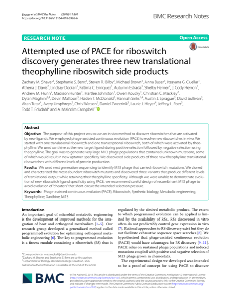

altan tutar
side projects
research
podcasts & videos
blog
press
Research papers
IEEE
TVCG
2020
The Impact of a Self-Avatar, Hand Collocation, and Hand Proximity on Embodiment and Stroop Interference
↗
Tabitha C. Peck, Altan Tutar · IEEE Transactions on Visualization and Computer Graphics 26(5), 1964–1971 · 2020
IEEE
VR
2019
Best Poster, IEEE VR 2019
Working Memory Load Performance Based on Collocation of Virtual and Physical Hands
↗
Altan Tutar, Tabitha C. Peck · IEEE VR 2019, Osaka · Best Poster Award

Attempted use of PACE for riboswitch discovery generates three new translational theophylline riboswitch side products
↗
Shaver et al. · BMC Research Notes 11, article 861 · 2018